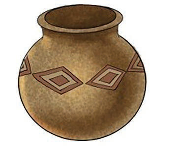

Figure 10: Arrangement of pots, wood, and leaves in an open oven
(e)
Add firewood and dry leaves until the pots are fully fired;
(f)
Allow the fire to extinguish and let the pots cool down completely;
(g)
Carefully remove the pots from the firing area and clean them of ashes with a cotton cloth; and
(h)
Decorate the pots by drawing various motifs as shown in Figure 11. Afterwards, paint them using small flat oil painting brushes. This marks the second stage of pot decoration.

Figure 11: A clay pot decorated with oil colour
Glazing clay objects
Clay objects are glazed using glaze minerals. Glaze is a mineral that resembles powder and is mixed with water before being applied to the object. There are three methods of applying glaze: brushing, dipping, and pouring. On the other
Clay pots stacked between layers of wood and dry leaves in an open oven for firing.Figure 10: Arrangement of pots, wood, and leaves in an open oven(e)Add firewood and dry leaves until the pots are fully fired;(f)Allow the fire to extinguish and let the pots cool down completely;(g)Carefully remove the pots from the firing area and clean them of ashes with a cotton cloth; and(h)Decorate the pots by drawing various motifs as shown in Figure 11.Afterwards, paint them using small flat oil painting brushes.This marks the second stage of pot decoration.A clay pot decorated with oil colour and diamond-shaped patterns.Figure 11: A clay pot decorated with oil colourGlazing clay objectsClay objects are glazed using glaze minerals.Glaze is a mineral that resembles powder and is mixed with water before being applied to the object.There are three methods of applying glaze: brushing, dipping, and pouring.On the other